¬°Bienvenido a mi portafolio!
Me llamo francis, Soy diseñador de moda, especializado en patronaje industrial y también soy Desarrollar web Junior Front-End, vivo en Barcelona, España. Tengo una sólida formación en diseño de moda y construcción de prendas, así como experiencia en la creación y mantenimiento de sitios web.
Además, he aprendido de forma autodidacta diseño gráfico, gestión de redes sociales y fotografía. Me apasiona el emprendimiento y siempre estoy en busca de nuevos desafíos y oportunidades para mostrar mis habilidades.
Gracias por visitar mi sitio web de portafolio. Espero que disfruten explorando mi trabajo.
Acerca de mí
Comencé mi carrera en la moda en el 2013 y lancé mi primera marca de ropa inclusiva producida en Barcelona, llamada "The Milk Barcelona", en el 2018. Desde entonces, he trabajado en numerosos proyectos de moda. En el 2020 fundé mi segunda marca de alta costura a medida llamada "PamaGarcia" y me he especializado en este ámbito. He adquirido habilidades en software de diseño de moda 3D, diseño gráfico y patronaje, como CLO3D, GERBER, Photoshop e Illustrator, lo que me permite ofrecer un servicio completo y de calidad. En el 2022, decidí seguir una carrera en desarrollo web para poder mezclar código y moda y crear diseños futuristas y vanguardistas. Desde entonces, he estado estudiando desarrollo front-end y back-end.
Disfruto de crear una identidad de marca coherente para mis proyectos y hacer realidad las ideas creativas. Siempre estoy buscando nuevas formas de mejorar mis habilidades y compartir mi conocimiento a través de mi trabajo creativo. Estoy emocionado de ver a dónde me llevan mis pasiones por la moda, diseño, y tecnología en el futuro. Gracias por leer y aprender más sobre mi viaje. Puedes conectarte conmigo en las redes sociales en los siguientes enlaces:
Diseño gráfico, branding e imagen corporativa
-

The Milk Barcelona
Marca de ropa inclusiva y hecha en Barcelona con mucho amor y pasión. Desde 2018, "The Milk Barcelona" ha sido mi proyecto de emprendimiento en el que me he encargado de todo el proceso creativo, desde el diseño gráfico y fotográfico hasta la confección y venta en línea.
-

La Mama Lili
Una tienda en línea de comida colombiana en Barcelona. Fui responsable de crear la identidad corporativa, el diseño gráfico, la fotografía y la gestión de redes sociales para promocionar esta marca.
-
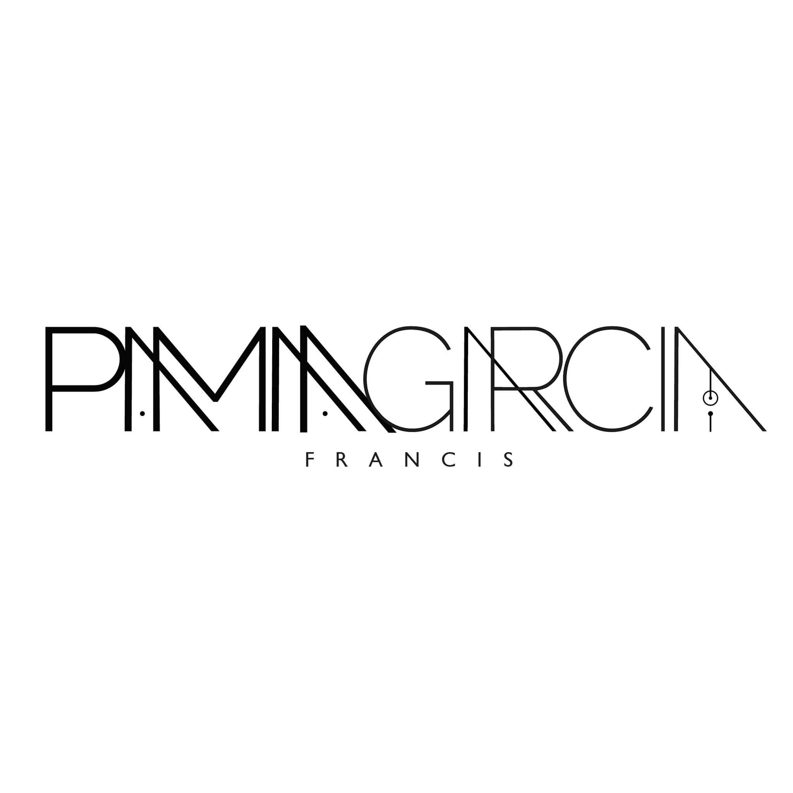
PamaGarcia By Francis
PamaGarcia, creada en 2020 con sede en Barcelona, España. Estilo minimalista, femenino e inclusivo, cada pieza es creada con gran atención al detalle y amor por la confección. Francis, el fundador, se encarga de todo el proceso de diseño y producción en su taller, asegurando que cada prenda sea única y adaptada a las necesidades de cada cliente.
-
Bono e'Bono
Una tienda en línea de pandebonos artesanales colombianos en Barcelona. Me encargué de la creación de la identidad corporativa, el diseño gráfico, la fotografía y la gestión de redes sociales para dar a conocer nuestra marca. Desde la elaboración de los pandebonos hasta la gestión de pedidos y entregas..
-
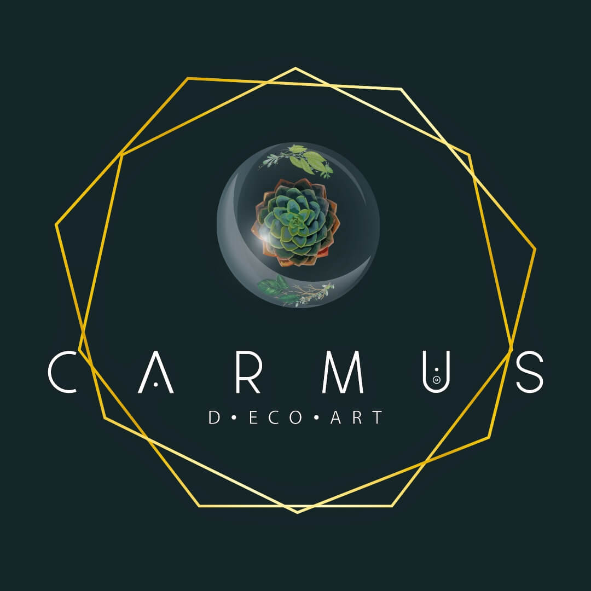
Carmus Deco Art
Carmus Deco Art es una tienda online de decoración artesanal. Desde el diseño de la marca y el logo hasta las redes sociales, hemos trabajado en todo el proceso para crear una imagen coherente y atractiva. Encuentra piezas únicas y hechas a mano para dar vida a cualquier espacio.
-
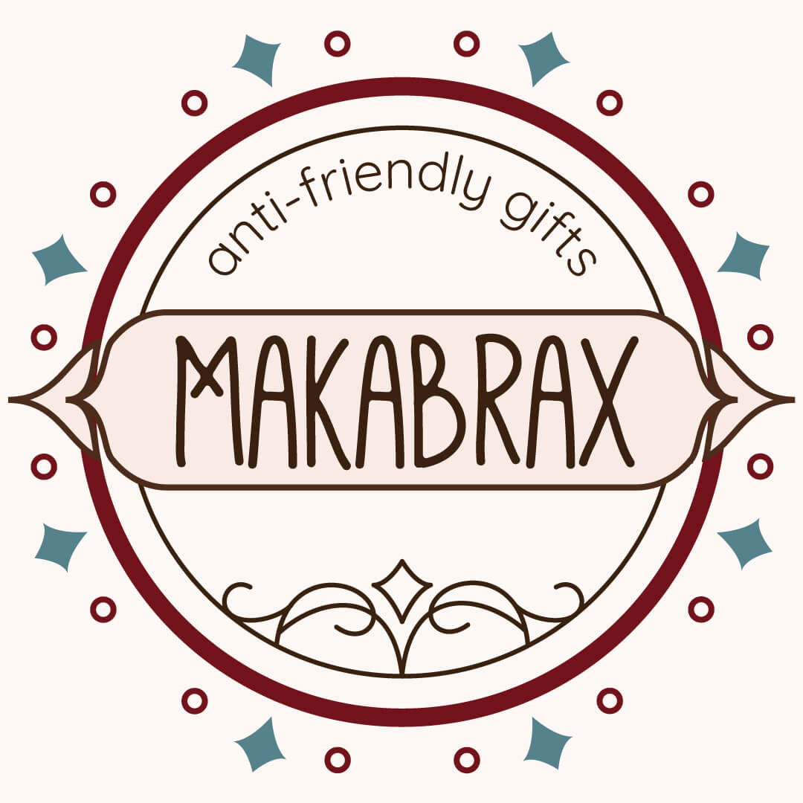
Makabrax Gifts
Una tienda en línea de regalos originales y personalizados en Barcelona. Creé la identidad corporativa, el diseño gráfico, la fotografía y la gestión de redes sociales para promocionar nuestra marca. Ofrecemos regalos fuera de lo común, anti amor, anti amigos, etc., desde cestas personalizadas hasta regalos temáticos..
Diseños de Ropa
Competencias:
-

African Couture
Vestido Dama De Honor Estilo Africano ~ Sumérgete en una experiencia exótica con nuestros vibrantes prints, sensuales siluetas ajustadas y el movimiento de nuestros vuelos sirena. Te llevarán a un estado de trance y te harán sentir la fuerza y la belleza de África.
-
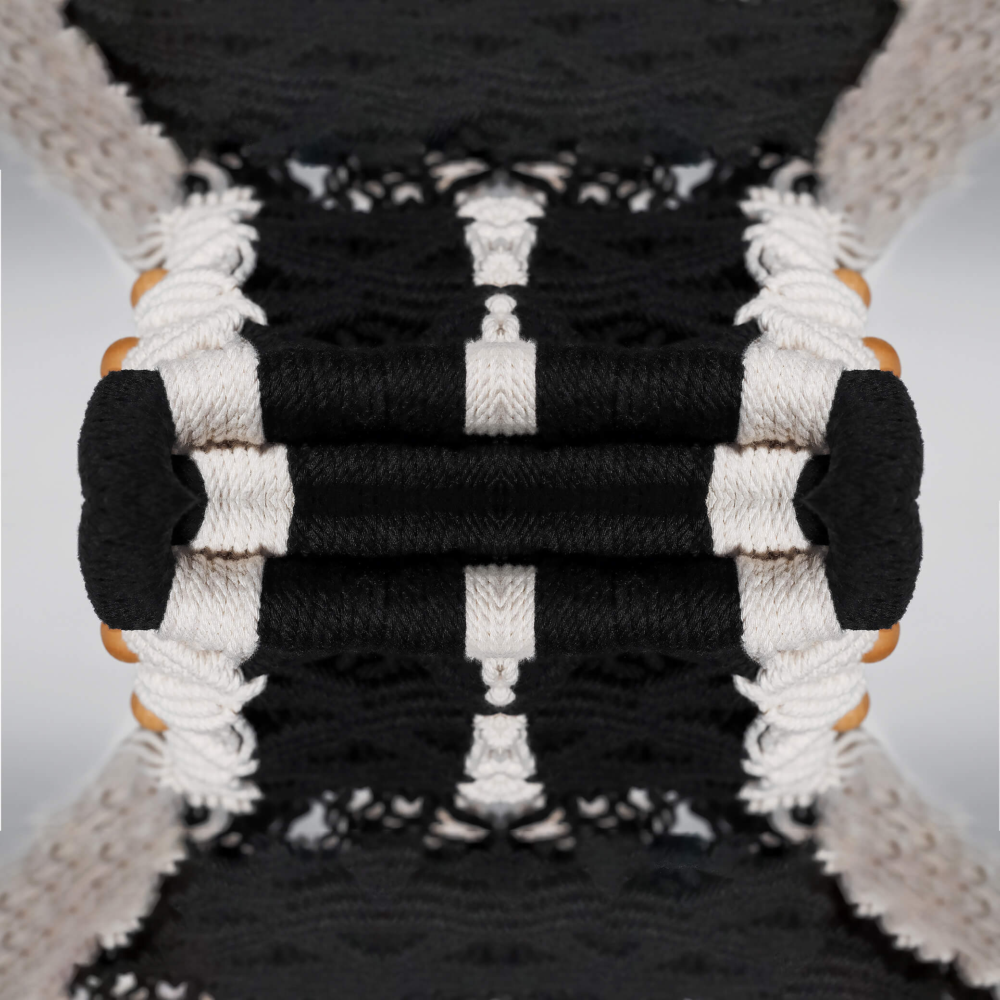
Macramé Passion
Bolsos de macramé que reflejan personalidad y estilo. Cada pieza está hecha a mano en Barcelona con atención a los detalles y utilizando materiales ecológicos. Expresa tu individualidad con estos bolsos únicos.
-

Barcelona Active Love
Desde Barcelona con amor. Esta camiseta amarilla de tirantes ..
-

Plata Minimalista
Con extra brillo, por favor, vive el estilo de vida con el Brazalete minimalista de plata 925. Descubre las joyas icónicas de Plata en el enlace de la biografía.
-

Cromatica Couture
Descubre la esencia de la elegancia con nuestra colección Cromática. Inspirada en el diseño de alta costura y confeccionada a mano en Barcelona, cada prenda está cuidadosamente elaborada para realzar tu estilo y destacar en cualquier ocasión.
-
Ojo de Tigre & Piedra Volc√°nica
Explora el encanto del brazalete con auténticas piedras naturales de "Ojo de Tigre" y piedra volcánica. Dale un toque único a tu estilo con esta joya única y distintiva.
-

Curvy World - by Pamagarcia
Curcy Lovers - diseñada especialmente para realzar la belleza y confianza de la mujer de hoy. ¡Encuentra tu estilo y siéntete hermosa!
-
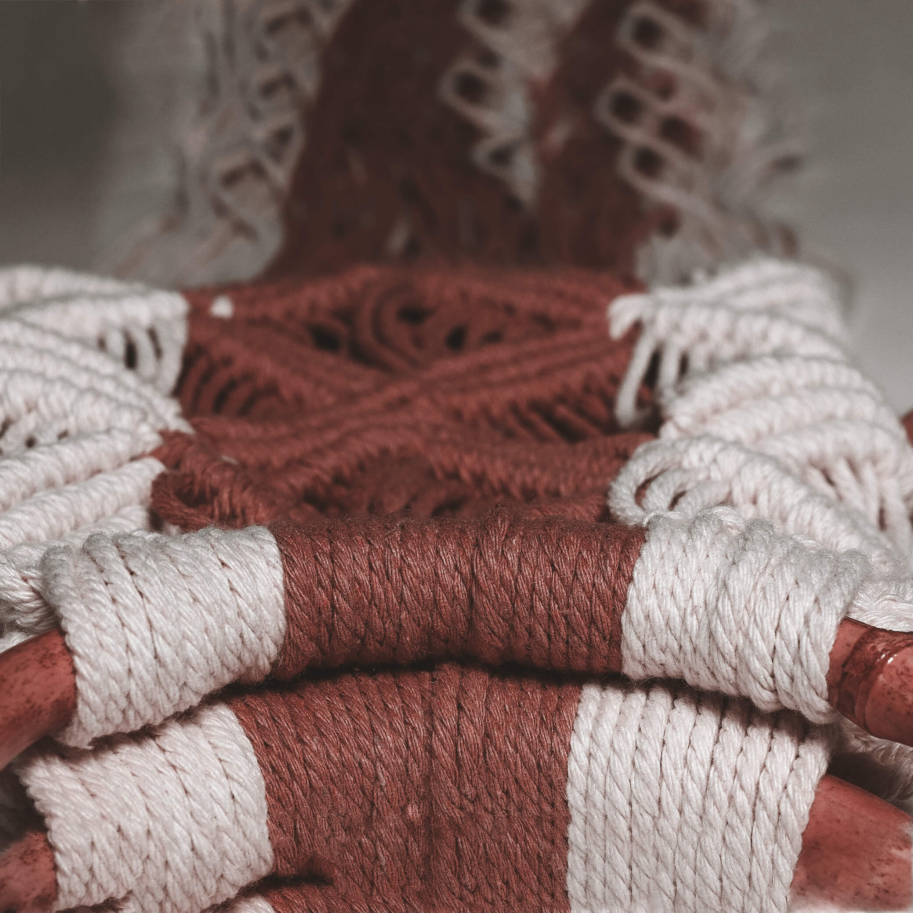
Macramé Rojo Intenso
Añade un toque audaz a tu estilo con nuestro bolso de macramé rojo intenso. Descubre la elegancia artesanal en cada hilo.
-

Focus On Yourself - by Francis
Descubre la camisa de tendencia "La Mujer de Hoy" by Francis. .
-
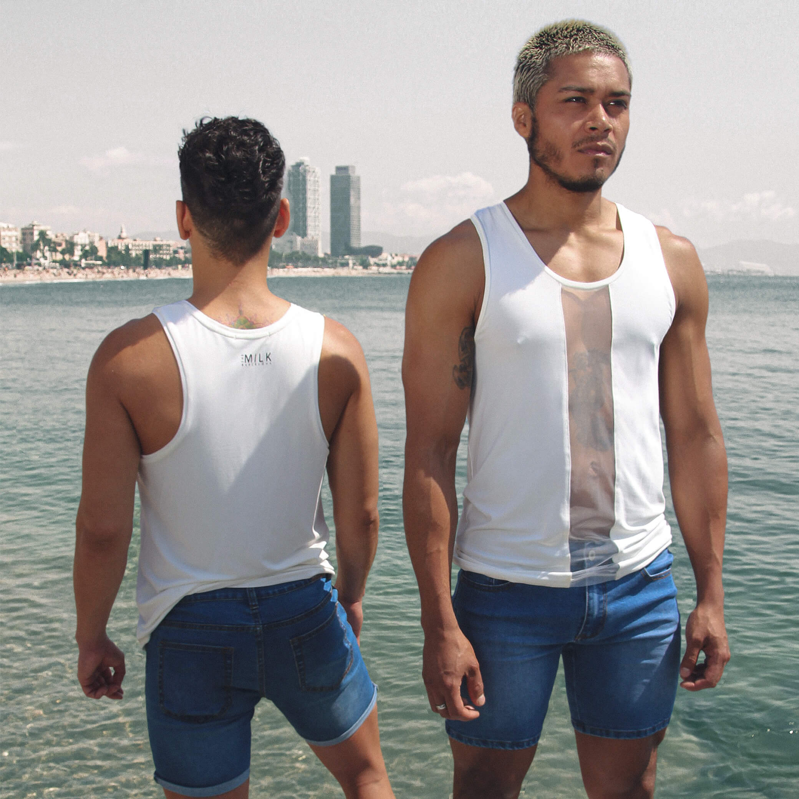
Look Sharp - Summer Menswear
Descubre todos los looks de moda masculina para el verano en el enlace de la biografía.
-

Colección "Cosmos" - Vibrante Universo
El "Cosmos" inspirados en nuestro grandioso universo. Estas preciosas y brillantes pulseras se han hecho artesanalmente en Barcelona.
-

Curvy World - by Pamagarcia
Curcy Lovers - diseñada especialmente para realzar la belleza y confianza de la mujer de hoy. ¡Encuentra tu estilo y siéntete hermosa!
-

Brillo de Plata - by Pamagarcia
Hematita Plata, donde el brillo realza la combinación con piezas de acero inoxidable. Expresa tu estilo con elegancia y sofisticación.
-

Psycodelic African Couture
‚Ñôùï§ùï™ùïîùïôùïñùïïùïñùïùùïöùïî ‚Ñôùï£ùïöùïüùï•ùï§ | s áuƒ±…π‘Ä …l«ùp«ù…•…î és‘Ä. Moda alta costura a medida, visita el taller en #Barcelona centro. @tifii.rodriguez
-
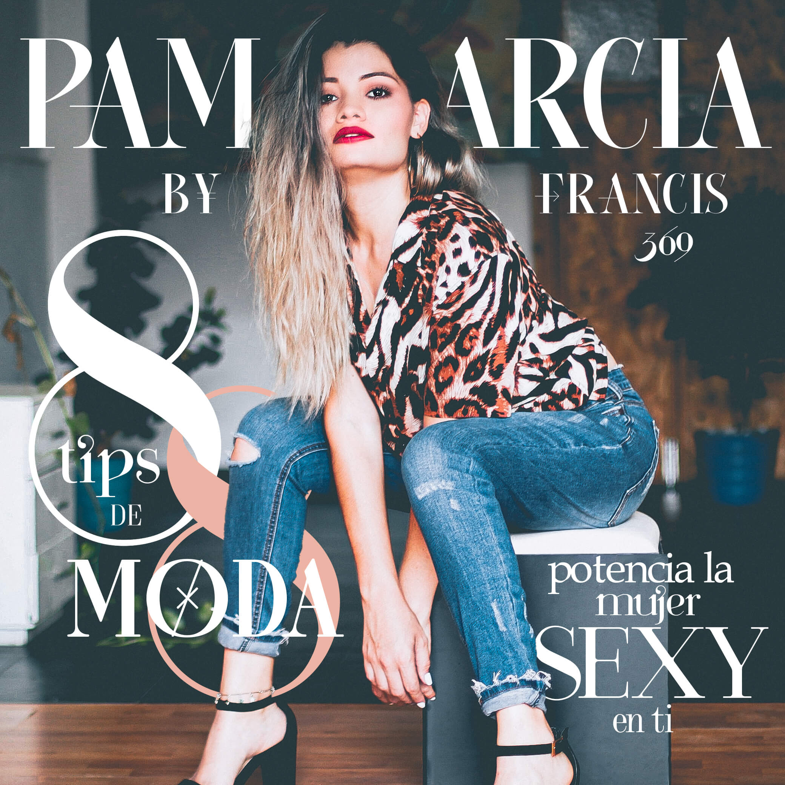
Camisa Print & Denim
Añade un toque de seducción a tu estilo con nuestras prendas de mujer con diseños exóticos y sensuales. El estampado animal y las siluetas ajustadas te harán sentir irresistible y poderosa.
Tienda

The Milk Barcelona
The Milk Barcelona es una marca de ropa inclusiva y local con sede en Barcelona. Desde 2018, me he dedicado a diseñar prendas que reflejen mi amor por la ciudad, su cultura y su gente. Nuestros productos están disponibles en plataformas como Etsy y Amazon.
Con un fuerte enfoque en la calidad, comodidad y durabilidad, mi ropa está confeccionada para cumplir con los más altos estándares. Me enorgullece ser inclusivo y representar a la vibrante comunidad de Barcelona a través de mis diseños.
Como creador y propietario exclusivo de The Milk Barcelona, me he encargado personalmente de todos los aspectos de la marca. Desde conceptualizar el nombre hasta desarrollar la imagen de marca, diseñar los productos, garantizar una calidad excepcional, gestionar la producción, crear contenido visual cautivador, desarrollar el sitio web, tomar decisiones estratégicas y más, he asumido todas las responsabilidades.
algunos Productos
-
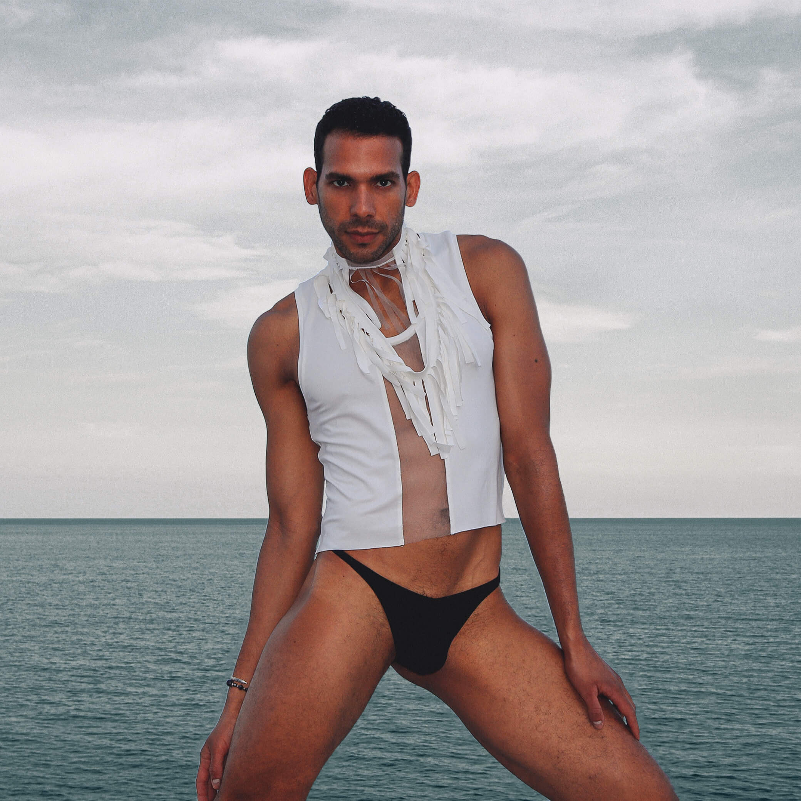
Crop Top
Estilo Queer
-

Camiseta Tirantes Gym
Comodidad activa
-
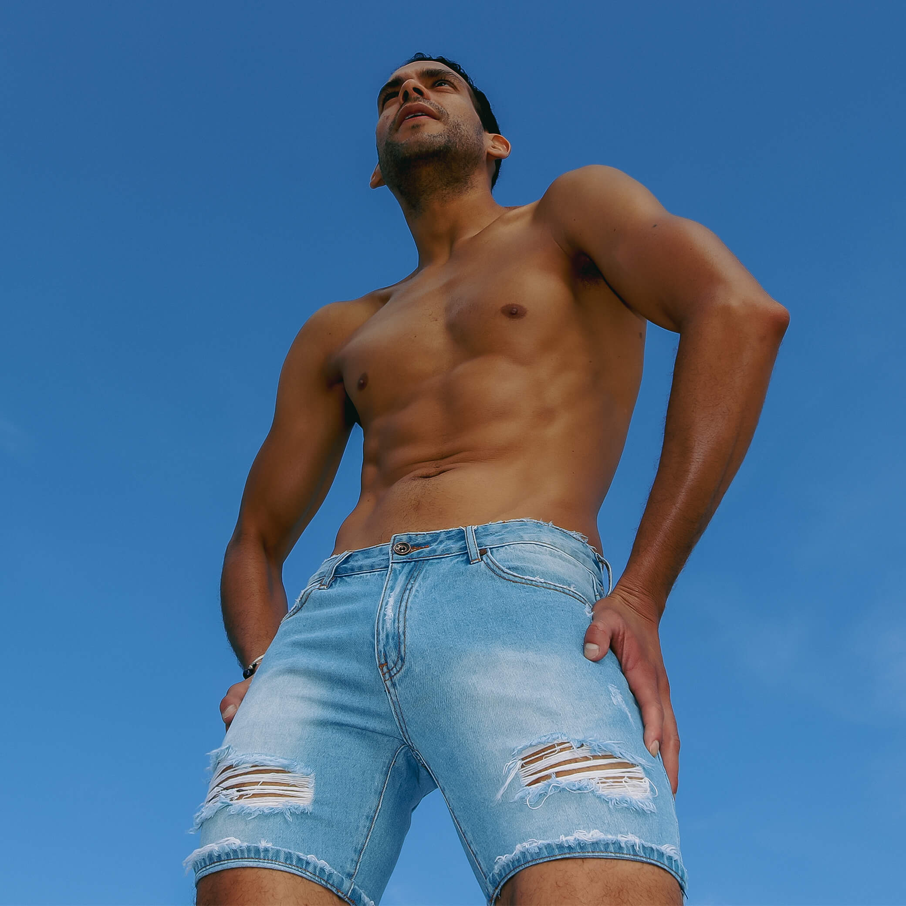
Short Vaquero Corto Azul Claro
Estilo desenfadado
-

Pantalon corto deportivo
Versatilidad activa
-
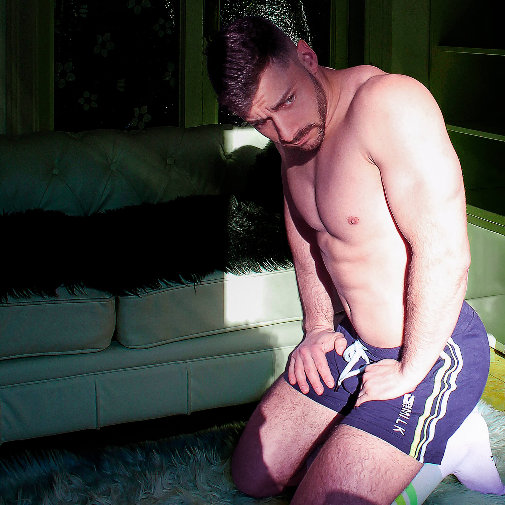
Pantalon Corto Bordado Gym
Estilo deportivo √∫nico
-
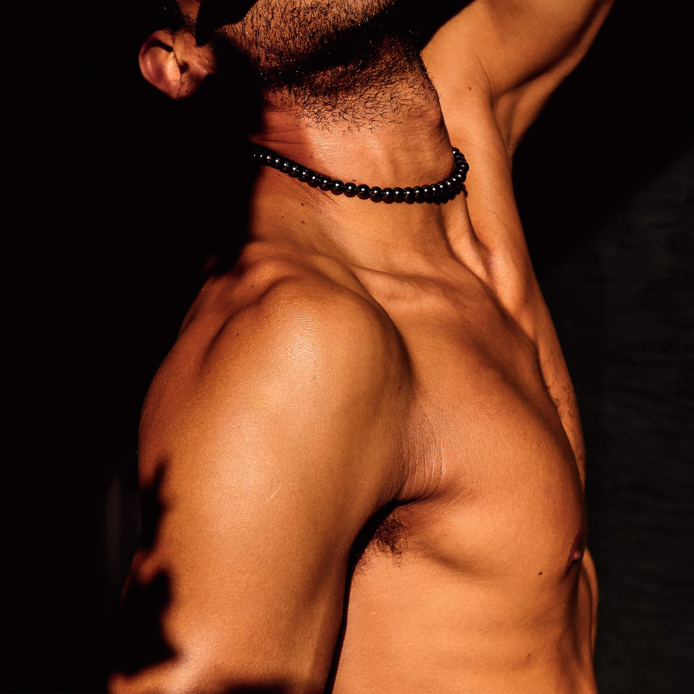
Collar hematita negra
Elegancia natural
-

Camiseta tirantes Gym
Comodidad Versatil
-

Short Denim Azul Claro
Estilo Barcelonés
-

Camiseta Tirantes Yoga
Energía tropical
Contacto
Hey, solo a un click de contacto, rellena el formulario o ponte en contacto conmigo a través de mis redes sociales:
Otra via?
Puedes comunicarte conmigo a través del formulario a continuación: